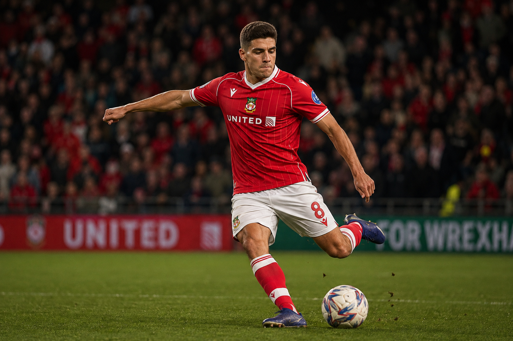

Profile
The son of former Everton/Fulham forward Danny Cadamarteri, Bailey joined Sheffield Wednesday's academy at eight and made his first-team debut in November 2023. A loan at Lincoln City in 2024–25 saw him get regular senior minutes, scoring 8 goals and sharpening his finishing. Back at Hillsborough for 2025–26 he made 30 appearances before a deadline-day move to Wrexham on a contract to 2029 in February 2026. Eligible for Jamaica internationally, he's regarded as a promising young forward still developing his end product at Championship level.
Real academy is <strong>Sheffield Wednesday</strong>, not Wrexham — he arrived via a first-team transfer in Feb 2026, not academy promotion.
Attributes
Career
Current development: Advanced Forward 68→69 ETA 34w